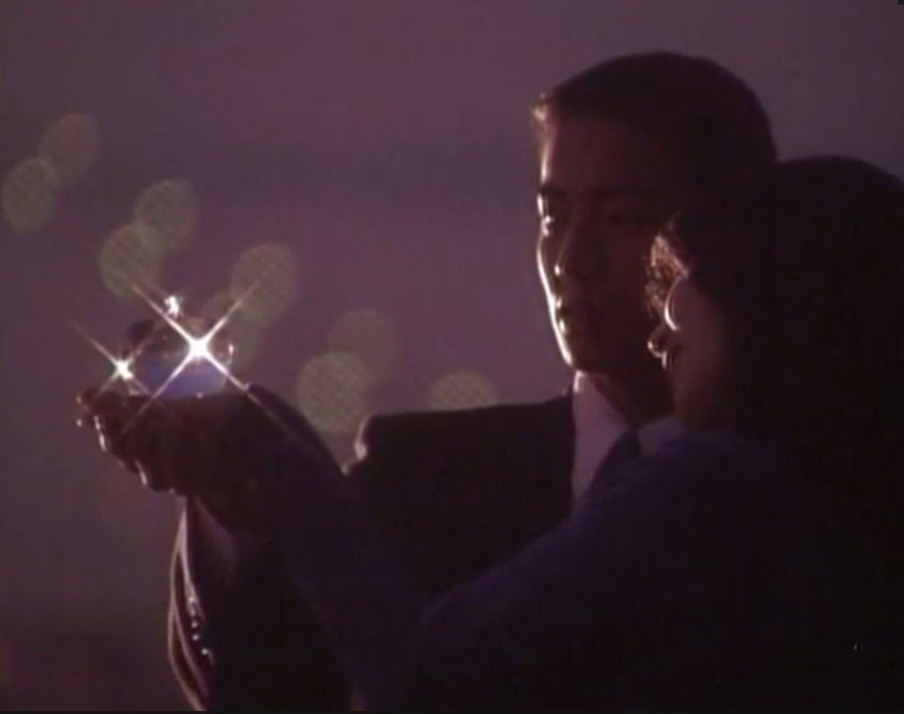

心に残るドラマ
ずっと心に残っているテレビドラマを紹介
このコーナーでは、YouTubeやdailymotionに投稿されているテレビドラマで、ずっと心に残っているものを集めてリンクを作ってみました。
途中にCMが入りますが数秒しますとスキップができます。ちょっと面倒ですがスキップを利用しながらご覧ください。
画像をクリックするとて拡大画像になります。
青字のドラマ名をクリックしますと、YouTubeが始まります。
ピンク字のwikipediaをクリックしますと、ウィキペディアの解説が読めます。

君の手がささやいている
軽部潤子による漫画を原作としたテレビドラマ。
1997年から2001年に年1回のスペシャルドラマとしてテレビ朝日系列で放送されました。
生まれながらにして音が殆ど聞こえない野辺 美栄子
（旧姓は武田 菅野美穂)と野辺 博文（のべ ひろふみ 武田真治）と一人娘の野辺 千鶴の物語。
主題歌はスティーヴィー・ワンダーのI Just Called To Say I Love You (心の愛)です。
Wikipedia

ラブジェネレーション
1997/10/13から12/22まで毎週月曜日21:00 - 21:54に、フジテレビ系列の「月9」枠で放送された日本のテレビドラマ。主演は木村拓哉と松たか子。
放映当時としてはフジテレビ月曜9時枠の連続ドラマにおいて最高記録となった（後に「HERO」が更新する）。また、大瀧詠一が実に12年ぶりに新曲を発表し、主題歌に起用されたドラマとしても知られている。